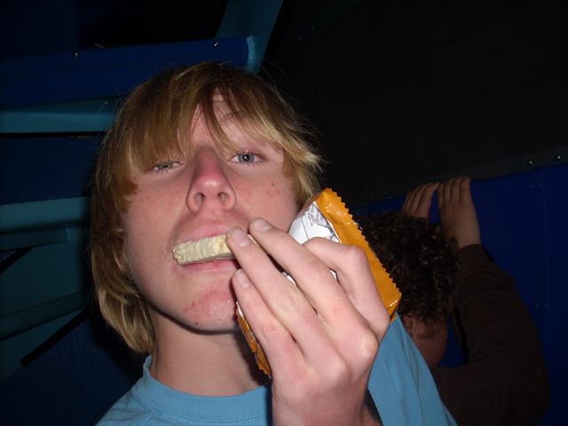
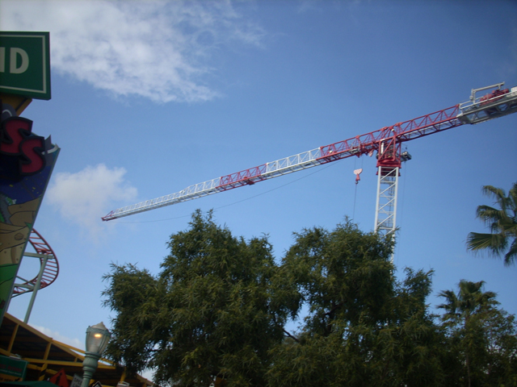
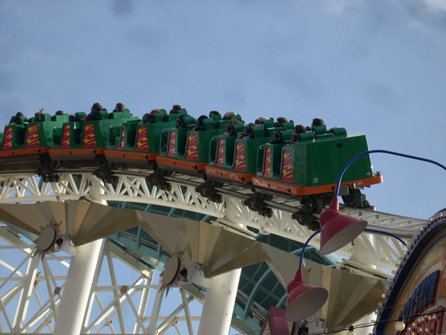
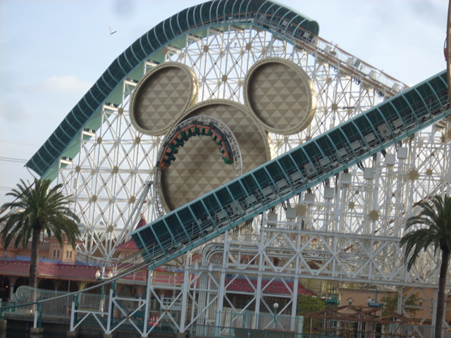

Disneyland Sunday
 And here we are at Disneyland. Originally wew going to going at Xmas Time like we usually do, but then we never got the time, so then we postponed it till the day after New Years, but then we heard it was raining, so we postponed it till the next week, but then we had some big problems that week, So we postponed it till today. Originally, we were going to postpone it again because of the rain, but by this time, we just said "F**k It! We've been postponing this trip long enough." It actually was a smart thing as the rain scared lots of people away leaving us with short lines!!! It only sprinkled for about 5 min in the morning. That's It!!!And so we're here at Disneyland about to ride Space Mtn.
And here we are at Disneyland. Originally wew going to going at Xmas Time like we usually do, but then we never got the time, so then we postponed it till the day after New Years, but then we heard it was raining, so we postponed it till the next week, but then we had some big problems that week, So we postponed it till today. Originally, we were going to postpone it again because of the rain, but by this time, we just said "F**k It! We've been postponing this trip long enough." It actually was a smart thing as the rain scared lots of people away leaving us with short lines!!! It only sprinkled for about 5 min in the morning. That's It!!!And so we're here at Disneyland about to ride Space Mtn.
What do you mean Space Mtn is closed because of the rain? (That was a joke, I was just making fun of Cedar Point for closing Disaster Transport because of the rain. But seriously, Space Mtn was closed at the moment.)
Thanks to stupid democracy, we went on Nemo. And as you can clearly see, We don't fit!!!!

And here I am, eating a snack on Nemo to help pass the time on this looong and booooring ride.
 Luckily, right after we got off Nemo, Space Mtn had just opened and had no line whatsoever.
Luckily, right after we got off Nemo, Space Mtn had just opened and had no line whatsoever.
They look happy at the moment, but they'll be dissapointed after realizing that here, Space Mtn is just a bunch of right turns.
 See what I mean?
See what I mean?
 As long as Florida doesn't change their Space Mtn, I'm OK with this.
As long as Florida doesn't change their Space Mtn, I'm OK with this.
A typical moment of Incrediblecoasters Stupidity.
 I thought Disneyland had a castle at the end of it's Main Street?
I thought Disneyland had a castle at the end of it's Main Street?
There it is. (By the way, this is my camera in full zoom.)
And now we're off to California Adventure.
See the Golden Gate Bridge? Take a good look at it because you won't be seeing it for much longer.
And here you can see more construction on what should be "The Little Mermaid Ride."
Mmmm. Big Cranes.
Celeste and Emily at Storytellers, Once again, Making their usual cheesebread.
Just in case you don't know what Cheesebread is, here is a picture of it.
 I think that cheesebread has damaged Celeste and Emily's mind since they want to go on Grizzly on a cold day. Or maybe they're having a Cody Moment.
I think that cheesebread has damaged Celeste and Emily's mind since they want to go on Grizzly on a cold day. Or maybe they're having a Cody Moment.
 Well the damn fools got what they asked for. And it brought laughs to everyone else.
Well the damn fools got what they asked for. And it brought laughs to everyone else.

More construction shots from Mullholland Madness's entrance.
After riding Dr Doom, I don't think I'll ever ride Maliboomer again.
 California Screamin Time.
California Screamin Time.
That's the type of wait I'd like to see for this ride every time I come here. Then I'd never have to use fastpass.

It may not have been running the way it was before the trims were added, but it was still better than how it was running on our last visit.
 Mikey having a badass ride on California Screamin.
Mikey having a badass ride on California Screamin.

Just another good shot of California Screamin. (Sigh, yes I know that was a crappy caption.)
Oh yeah, Toy Story Mania Update!! As you can see, they have completed the building.
I love Beignets!!!
But seriously, who wouldn't love the offspring of a doughnut and a funnel cake.
And after eating Beignets, we left. We had a good time.
Home